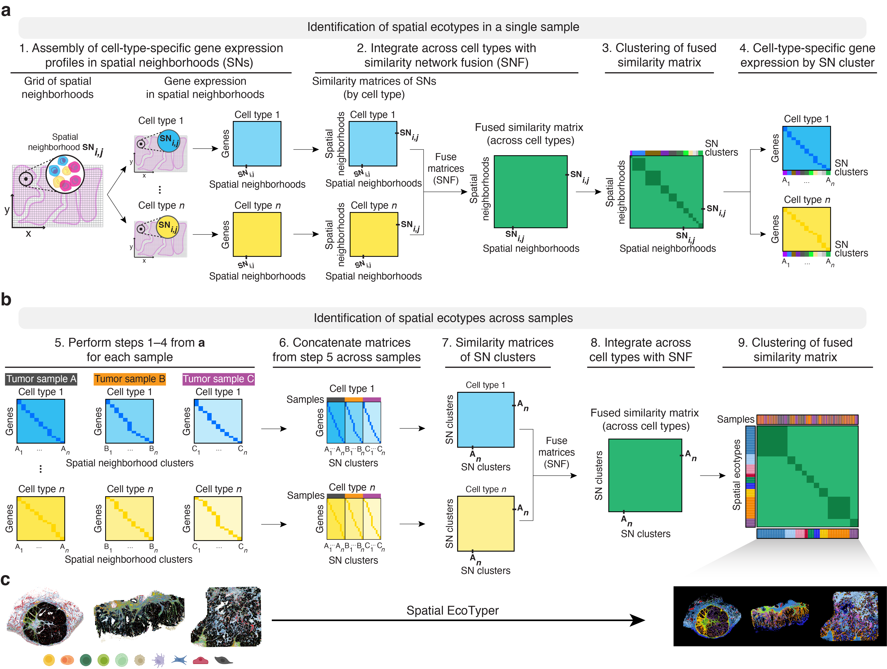
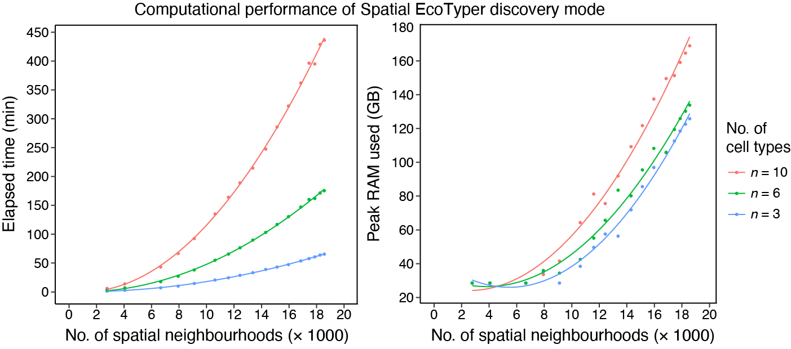
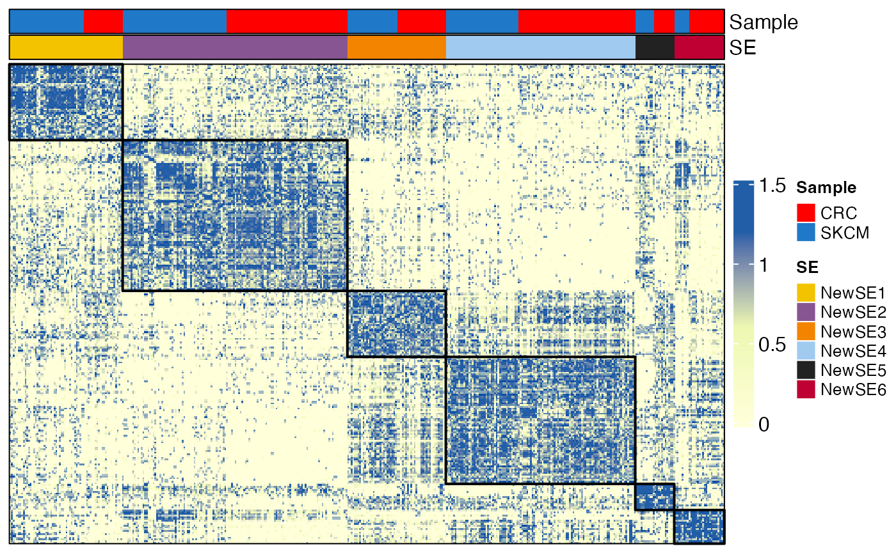
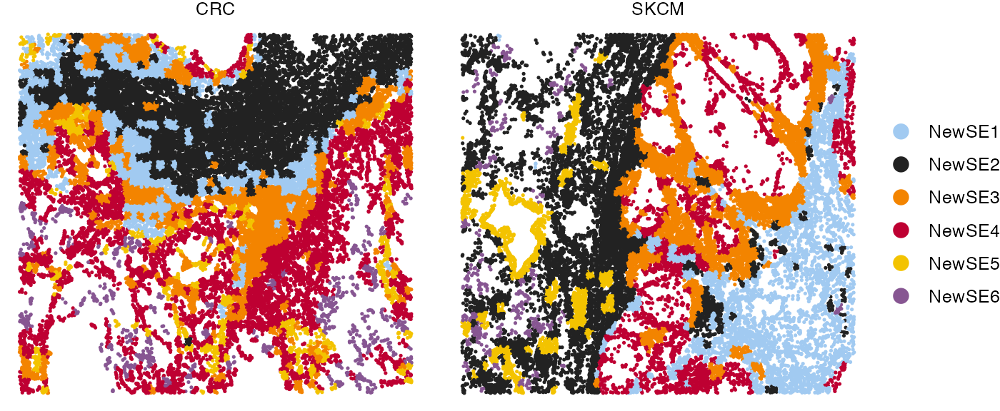
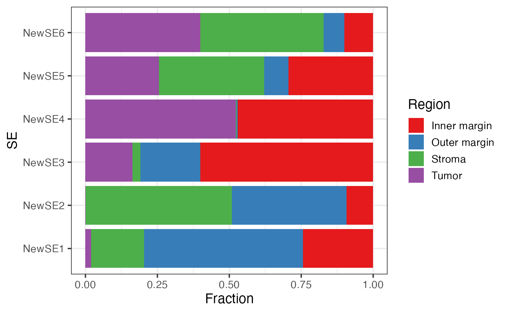
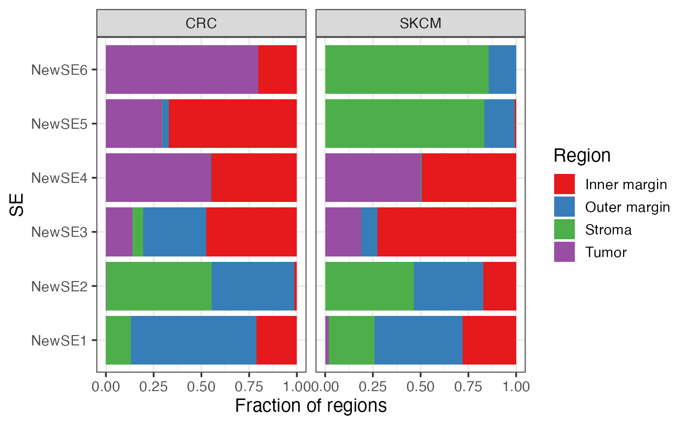
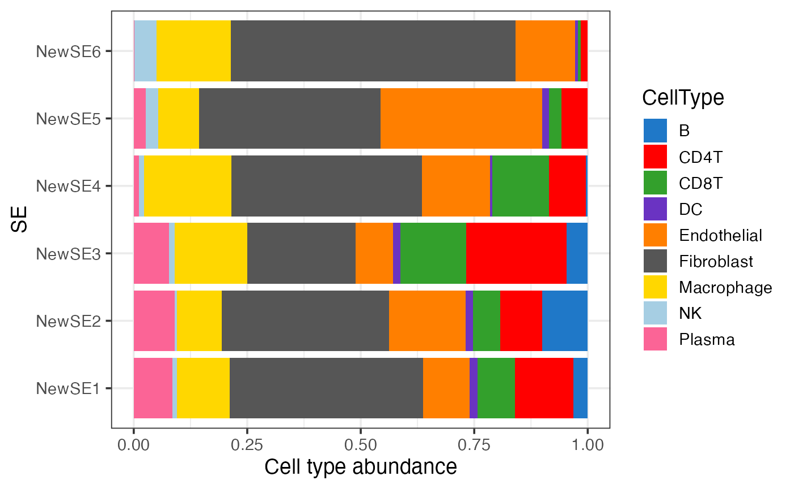
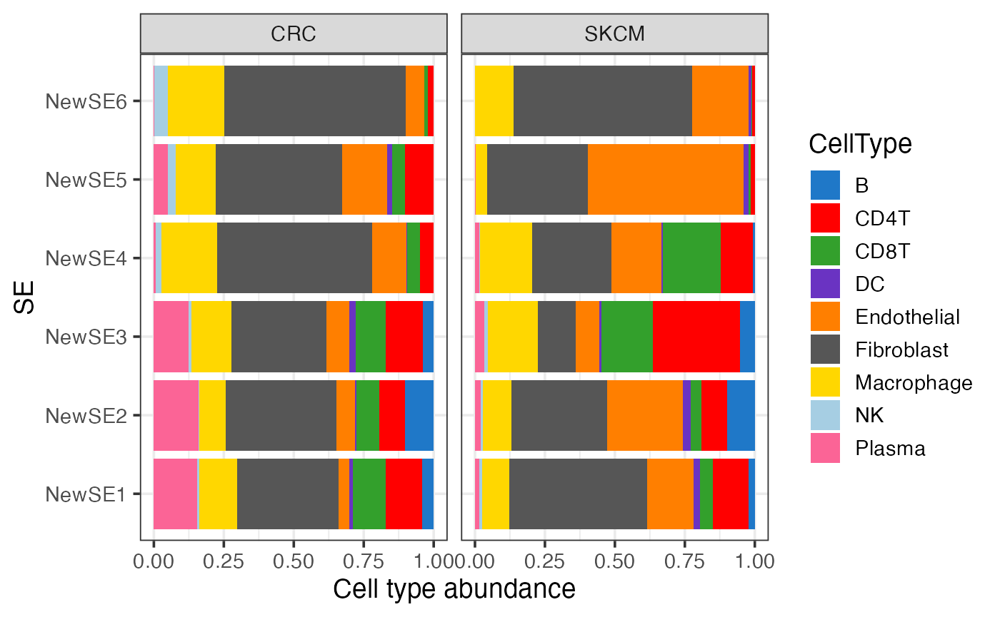
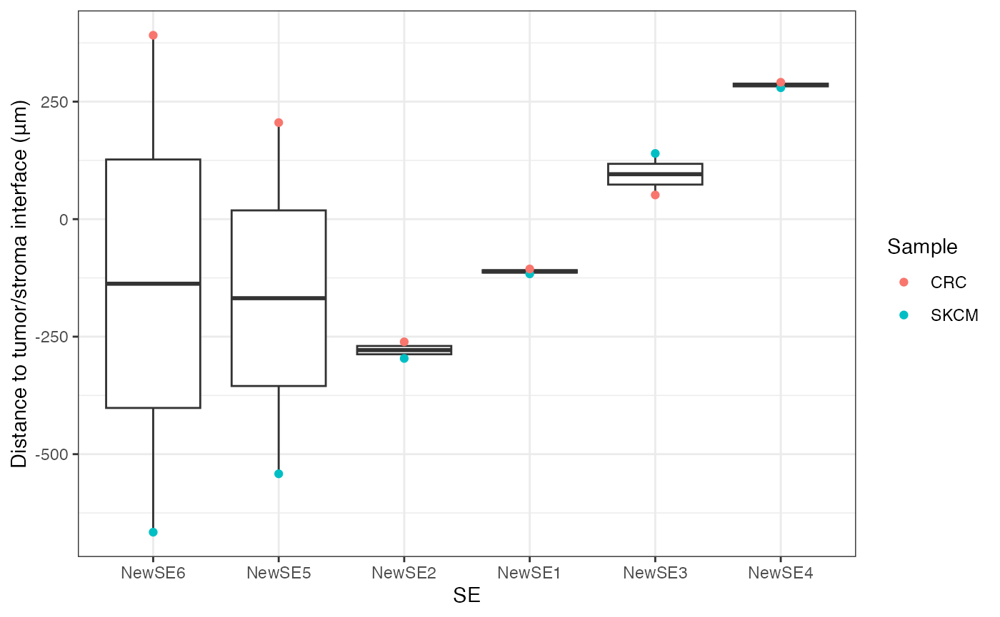

Discovering Conserved Spatial Ecotypes Across Multiple Spatial Transcriptomics Samples
Source:vignettes/Integration.Rmd
Integration.RmdOverview
In this tutorial, we will illustrate how to identify conserved spatial ecotypes (SEs) across multiple single-cell spatial transcriptomics (ST) datasets using the SpatialEcoTyper framework.

The analysis is performed in two stages:
- Determination of sample-level spatial clusters (Steps 1-4): Spatial neighborhood clusters from each single-cell ST sample can be identified using the SpatialEcoTyper function. Check Tutorial 1 for details.
- Identification of conserved spatial ecotypes (Steps 5-9): Spatial neighborhood clusters discovered from individual single-cell ST samples are represented by gene expression profiles (GEPs) of their associated cell states, and clusters with similar GEPs are aggregated across samples to identify conserved SEs.
Input requirement
All single-cell-scale ST datasets can be used to discover spatial ecotypes. In our study (Zhang et al., Nature), we applied SpatialEcoTyper to both MERSCOPE and Xenium datasets and identified highly consistent pan-cancer spatial ecotypes across the two platforms.
Single-cell ST gene expression profiles are inherently affected by transcript spillover. In our study, we addressed this issue by constructing a whitelist of genes expressed in each cell type using a pan-cancer scRNA-seq atlas and removing transcripts that were not included in the corresponding cell-type whitelist. Alternatively, computational methods such as SPLIT have been developed to decontaminate single-cell ST data by correcting transcript spillover. We recommend applying either a whitelist-based filtering strategy or a dedicated decontamination method before SE discovery, as improving data quality can substantially enhance the robustness and biological interpretability of the discovered spatial ecotypes.
Example data
For the demonstration of the integrative analysis of multiple single-cell ST samples, we have selected a subset of regions from a melanoma sample and a colon cancer sample profiled by Vizgen MERSCOPE.
The melanoma sample includes spatial expression data for 500 genes across 27,907 cells, while the colon cancer sample contains data for 38,080 cells. In both samples, cells were categorized into ten distinct cell types: B cells, CD4 T cells, CD8 T cells, NK cells, plasma cells, macrophages, dendritic cells (DC), fibroblasts, endothelial cells, and cancer cells. Cancer cells are excluded from this demonstration to reduce processing time.
All cells are grouped into tumor (tumor and inner margin) and stroma regions (stroma and outer margin) based on the density of cancer cells, as described in the CytoSPACE paper. The inner and outer margins are defined as regions extending 250 μm inside and outside the tumor boundaries, respectively.
Load required packages for this vignette
suppressPackageStartupMessages(library(dplyr))
suppressPackageStartupMessages(library(ggplot2))
suppressPackageStartupMessages(library(parallel))
suppressPackageStartupMessages(library(Seurat))
suppressPackageStartupMessages(library(data.table))
suppressPackageStartupMessages(library(NMF))
suppressPackageStartupMessages(library(ComplexHeatmap))
library(SpatialEcoTyper)Start with SpatialEcoTyper results from individual single-cell ST samples
Multiple samples can be integrated to identify conserved spatial ecotypes using IntegrateSpatialEcoTyper. Before integration, each sample must be analyzed individually following Tutorial 1 using identical analysis settings. To ensure robust integration, cell types included in the analysis should present in more than 50% of the samples.
This IntegrateSpatialEcoTyper function requires two input data objects per sample:
Gene expression matrix: a numeric matrix with genes as rows and cells as columns. The data should be already analyzed with SpatialEcoTyper.
SpatialEcoTyper output: a list object obtained from single-sample analysis with SpatialEcoTyper. If you don’t have the results yet, please follow Tutorial 1 for the analysis.
Load the demo data
url <- "https://spatialecotyper.stanford.edu/inc/inc.public.vignettes.php?file=CRC2_subset_SpatialEcoTyper_results.rds"
download.file(url, destfile = "CRC2_subset_SpatialEcoTyper_results.rds", mode = "wb")
url <- "https://spatialecotyper.stanford.edu/inc/inc.public.vignettes.php?file=Melanoma1_subset_SpatialEcoTyper_results.rds"
download.file(url, destfile = "Melanoma1_subset_SpatialEcoTyper_results.rds", mode = "wb")
# Load single-cell gene expression data. Rows represent gene names and columns represent cell IDs
scdata1 <- fread("https://spatialecotyper.stanford.edu/inc/inc.public.vignettes.php?file=Melanoma1_subset_counts.tsv.gz",
sep = "\t", header = TRUE, data.table = FALSE)
rownames(scdata1) <- scdata1[, 1] # Setting the first column as row names
scdata1 <- as.matrix(scdata1[, -1]) # Dropping first column
scdata2 <- fread("https://spatialecotyper.stanford.edu/inc/inc.public.vignettes.php?file=CRC2_subset_counts.tsv.gz",
sep = "\t", header = TRUE, data.table = FALSE)
rownames(scdata2) <- scdata2[, 1] # Setting the first column as row names
scdata2 <- as.matrix(scdata2[, -1]) # Dropping first column
head(scdata1[,1:5])## HumanMelanomaPatient1__cell_3655 HumanMelanomaPatient1__cell_3657
## PDK4 0 1
## TNFRSF17 0 0
## ICAM3 0 0
## FAP 1 0
## GZMB 0 0
## TSC2 0 0
## HumanMelanomaPatient1__cell_3658 HumanMelanomaPatient1__cell_3660
## PDK4 1 0
## TNFRSF17 0 0
## ICAM3 0 0
## FAP 0 0
## GZMB 0 0
## TSC2 0 0
## HumanMelanomaPatient1__cell_3661
## PDK4 0
## TNFRSF17 0
## ICAM3 0
## FAP 0
## GZMB 0
## TSC2 0
# head(scdata2[,1:5])
## Normalize the data as needed
normdata1 <- NormalizeData(scdata1)
normdata2 <- NormalizeData(scdata2)
data_list <- list(SKCM = normdata1, CRC = normdata2)
SpatialEcoTyper_results_list <- list(SKCM = readRDS("Melanoma1_subset_SpatialEcoTyper_results.rds"),
CRC = readRDS("CRC2_subset_SpatialEcoTyper_results.rds"))
IntegrateSpatialEcoTyper(SpatialEcoTyper_results_list, data_list,
outdir = "SpatialEcoTyper_results/",
normalization.method = "None",
nfeatures = 300, # Number of top variable genes to use
nmf_ranks = 4:15, # Number of clusters to test
nrun.per.rank = 10, # recommend 30 or higher for robust results
ncores = 16)Choosing the optimal number of SEs: NMF clustering
is used to identify conserved spatial ecotypes across samples. To
determine the optimal number of SEs, users can specify the
nmf_ranks and nrun.per.rank arguments to
evaluate multiple candidate ranks, each with a defined number of runs
(we recommend ≥30 runs per rank to ensure robustness, as NMF uses random
initialization). For each rank, the cophenetic coefficient is computed
to assess clustering stability. This metric ranges from 0 to 1, with
higher values indicating greater stability. Typically, the cophenetic
coefficient exhibits a multi-modal pattern across ranks, and we selected
the optimal number of SEs as the highest rank at which the cophenetic
coefficient exceeds 0.95 (controlled by the min.coph
argument) and is followed by the largest subsequent decrease, indicating
a transition to less stable solutions.
Balancing predefined regions: If predefined tissue
regions are available (e.g., pathologist annotations of tumor and
adjacent stromal regions), you can use the Region and
downsample.by.region argument to balance spatial
neighborhoods across regions. When enabled, the method downsamples
neighborhoods within each region to ensure comparable representation and
to weight regions equally during integration.
Start with raw single-cell ST data from multiple samples
The MultiSpatialEcoTyper function provides an end-to-end pipeline for the integrative analysis of single-cell spatial transcriptomics data across multiple samples. While this streamlined workflow is convenient, it can be computationally intensive. Therefore, we recommend first analyzing each sample individually using the SpatialEcoTyper function, as demonstrated in Tutorial 1. The resulting outputs can then be integrated across samples using the IntegrateSpatialEcoTyper function, as described above.
The MultiSpatialEcoTyper requires two input data objects per sample:
- Gene expression matrix: a numeric matrix with genes as rows and cells as columns.
- Metadata: a data frame containing at least three columns: “X” (x-coordinate), “Y” (y-coordinate), and “CellType” (cell type annotation). Row names must match the column names (cell IDs) in the expression matrix.
First, load single-cell gene expression data and meta data for the two example samples.
# Load single-cell gene expression data. Rows represent gene names and columns represent cell IDs
scdata1 <- fread("https://spatialecotyper.stanford.edu/inc/inc.public.vignettes.php?file=Melanoma1_subset_counts.tsv.gz",
sep = "\t", header = TRUE, data.table = FALSE)
rownames(scdata1) <- scdata1[, 1] # Setting the first column as row names
scdata1 <- as.matrix(scdata1[, -1]) # Dropping first column
scdata2 <- fread("https://spatialecotyper.stanford.edu/inc/inc.public.vignettes.php?file=CRC2_subset_counts.tsv.gz",
sep = "\t", header = TRUE, data.table = FALSE)
rownames(scdata2) <- scdata2[, 1] # Setting the first column as row names
scdata2 <- as.matrix(scdata2[, -1]) # Dropping first column
head(scdata1[,1:5])## HumanMelanomaPatient1__cell_3655 HumanMelanomaPatient1__cell_3657
## PDK4 0 1
## TNFRSF17 0 0
## ICAM3 0 0
## FAP 1 0
## GZMB 0 0
## TSC2 0 0
## HumanMelanomaPatient1__cell_3658 HumanMelanomaPatient1__cell_3660
## PDK4 1 0
## TNFRSF17 0 0
## ICAM3 0 0
## FAP 0 0
## GZMB 0 0
## TSC2 0 0
## HumanMelanomaPatient1__cell_3661
## PDK4 0
## TNFRSF17 0
## ICAM3 0
## FAP 0
## GZMB 0
## TSC2 0
# head(scdata2[,1:5])
# Load single-cell metadata
# Row names should be cell ids. Required columns: X, Y, CellType;
# Recommend a 'Region' column if region annotations are available
scmeta1 <- read.table("https://spatialecotyper.stanford.edu/inc/inc.public.vignettes.php?file=Melanoma1_subset_scmeta.tsv",
sep = "\t", header = TRUE, row.names = 1)
scmeta2 <- read.table("https://spatialecotyper.stanford.edu/inc/inc.public.vignettes.php?file=CRC2_subset_scmeta.tsv",
sep = "\t", header = TRUE, row.names = 1)
head(scmeta1[, c("X", "Y", "CellType", "Region")])## X Y CellType Region
## HumanMelanomaPatient1__cell_3655 1894.706 -6367.766 Fibroblast Stroma
## HumanMelanomaPatient1__cell_3657 1942.480 -6369.602 Fibroblast Stroma
## HumanMelanomaPatient1__cell_3658 1963.007 -6374.026 Fibroblast Stroma
## HumanMelanomaPatient1__cell_3660 1981.600 -6372.266 Fibroblast Stroma
## HumanMelanomaPatient1__cell_3661 1742.939 -6374.851 Fibroblast Stroma
## HumanMelanomaPatient1__cell_3663 1921.683 -6383.309 Fibroblast Stroma## X Y CellType Region
## HumanColonCancerPatient2__cell_1085 5057.912 -1721.871 Macrophage Inner margin
## HumanColonCancerPatient2__cell_1205 5035.339 -1783.352 Macrophage Inner margin
## HumanColonCancerPatient2__cell_1312 5012.093 -1908.390 Macrophage Inner margin
## HumanColonCancerPatient2__cell_1625 5073.743 -1861.740 Macrophage Inner margin
## HumanColonCancerPatient2__cell_1629 5030.235 -1867.441 Macrophage Inner margin
## HumanColonCancerPatient2__cell_1639 5020.448 -1882.751 Macrophage Inner margin
# Make sure row names of the meta data match column names of the gene expression matrix
scdata1 <- scdata1[, match(rownames(scmeta1), colnames(scdata1))]
scdata2 <- scdata2[, match(rownames(scmeta2), colnames(scdata2))]
## Normalize the data as needed
normdata1 <- NormalizeData(scdata1)
normdata2 <- NormalizeData(scdata2)You can then submit the job. As this step is computationally intensive, refer to the section below for the recommended memory allocation and estimated runtime requirements.
data_list <- list(SKCM = normdata1, CRC = normdata2)
metadata_list <- list(SKCM = scmeta1, CRC = scmeta2)
MultiSpatialEcoTyper(data_list, metadata_list,
normalization.method = "None", # Normalization method
nfeatures = 300,
nmf_ranks = 4:15, # Number of clusters
nrun.per.rank = 30, # Recommend 30 or higher for robust results
ncores = 2)Optimizing memory usage
The similarity network fusion (Step 2 of SpatialEcoTyper) is the most computationally demanding step, and its runtime increases with the number of spatial neighborhoods (SNs) per sample.

For example, an analysis involving 10 cell types and 18,564 SNs required 436 minutes of runtime and reached a peak memory usage of 169 GB. This benchmark was obtained on a computing cluster equipped with an AMD EPYC 7543 processor (2.75 GHz) and 256 GB RAM, using a single CPU core and excluding data loading time.To reduce runtime, users can increase the number of cores via the
ncores parameter. However, this parallelization comes at
the cost of increased memory consumption.
When memory resources are limited, users can reduce the number of
spatial neighborhoods by increasing grid.size, which makes
the spatial grid coarser. Increasing radius can also reduce
the number of unique SNs, but it changes spatial resolution and should
be used carefully.
Output results
All results will be saved in the specified directory
(outdir). The output files include:
-
(SampleName)_SpatialEcoTyper_results.rdsSpatialEcoTyperresult for each sample (ifMultiSpatialEcoTyperfunction was used). - MultiSE_integrated_final.rds A matrix representing the fused similarity matrix of spatial clusters across all samples.
- MultiSE_integrated_final_hmap.pdf A heatmap visualizing the fused similarity matrix of spatial clusters, grouped by samples and SEs.
- MultiSE_metadata_final.rds Single-cell metadata with an ‘SE’ column annotating the discovered SEs, saved as an RDS file.
-
MultiSE_metadata_final.tsv The same as
MultiSE_metadata_final.rds, but saved in TSV format. - SpatialView_SEs_by_Sample.pdf A figure showing the spatial landscape of SEs across samples.
- BarView_SEs_Sample_Frac.pdf A bar plot showing the fraction of cells from each sample represented within each SE.
- BarView_SEs_Region_Frac_Avg.pdf A bar plot showing the average fraction of regions represented within each SE.
- BarView_SEs_CellType_Frac_Avg.pdf A bar plot showing the average cell type composition within each SE.
-
MultiSE_NMF_results.rds The NMF result derived from
the
nmfClusteringfunction. If a single rank was provided, it contains anNMFfitX1object . If multiple ranks were provided, it is alistcontaining the optimal number of communities (bestK), a list ofNMFfitX1objects (NMFfits), and aggplotobject (p) displaying the cophenetic coefficient for different cluster numbers. - MultiSE_NMF_Cophenetic_Dynamics.pdf A figure showing the cophenetic coefficients for different numbers of clusters, only available when multiple ranks were provided.
Identifying a different number of spatial ecotypes
SpatialEcoTyper uses NMF to group spatial clusters from multiple samples into conserved SEs. If you want to try a different number of clusters for spatial ecotype identification, you can use the nmfClustering function.
This analysis requires the fused similarity network matrix
(MultiSE_integrated_final.rds) generated from previous
step.
## Fused similarity matrix of spatial clusters across all samples
outdir = "SpatialEcoTyper_results/"
integrated = readRDS(file.path(outdir, "MultiSE_integrated_final.rds"))
dim(integrated)## [1] 385 385
## Single-cell metadata with an 'SE' column annotating the discovered SEs
# Column InitSE: Sample-level spatial clusters (before integration)
# Column SE: Conserved spatial ecotypes (after cross-sample integration)
finalmeta = readRDS(file.path(outdir, "MultiSE_metadata_final.rds"))
head(finalmeta[, c("Sample", "X", "Y", "CellType", "Region", "InitSE", "SE")])## Sample X Y CellType Region
## HumanMelanomaPatient1__cell_3655 SKCM 1894.706 -6367.766 Fibroblast Stroma
## HumanMelanomaPatient1__cell_3657 SKCM 1942.480 -6369.602 Fibroblast Stroma
## HumanMelanomaPatient1__cell_3658 SKCM 1963.007 -6374.026 Fibroblast Stroma
## HumanMelanomaPatient1__cell_3660 SKCM 1981.600 -6372.266 Fibroblast Stroma
## HumanMelanomaPatient1__cell_3661 SKCM 1742.939 -6374.851 Fibroblast Stroma
## HumanMelanomaPatient1__cell_3663 SKCM 1921.683 -6383.309 Fibroblast Stroma
## InitSE SE
## HumanMelanomaPatient1__cell_3655 SKCM..InitSE104 NewSE1
## HumanMelanomaPatient1__cell_3657 SKCM..InitSE56 NewSE5
## HumanMelanomaPatient1__cell_3658 SKCM..InitSE56 NewSE5
## HumanMelanomaPatient1__cell_3660 SKCM..InitSE56 NewSE5
## HumanMelanomaPatient1__cell_3661 SKCM..InitSE149 NewSE1
## HumanMelanomaPatient1__cell_3663 SKCM..InitSE104 NewSE1For instance, if you want to identify 10 SEs, you can specific
ranks = 10 to identify 10 clusters.
nmf_res <- nmfClustering(integrated, ranks = 10, nrun.per.rank = 30,
seed = 1, ncores = 8)
ses <- predict(nmf_res)
## Add the newly defined SEs into the meta data
finalmeta$SE = paste0("SE", ses[finalmeta$InitSE])
head(finalmeta)Determining the optimal number of clusters
To determine the optimal number of clusters, you can provide multiple
candidate values to the ranks argument in the nmfClustering function, which
evaluates each specified rank and computes the corresponding cophenetic
coefficient to assess clustering stability. Running time for this step
could be time-consuming, and the time requirement is dependent on the
data size, the number of ranks to test, the number of runs per rank, and
the number of cores for parallel analysis.
nmf_res <- nmfClustering(integrated, ranks = 2:30,
nrun.per.rank = 30, # Recommend 30 or higher
min.coph = 0.95,
ncores = 4,
seed = 1)
paste0("The selected rank is ", nmf_res$bestK)
## Visualize the change of cophenetic coefficient across ranks
plot(nmf_res$p)Once the optimal rank is determined, you can use it to generate the final SE annotations.
Visualizing SEs
Visualizing the integrated similarity matrix
After updating the NMF clustering results, you can re-order spatial clusters across samples and visualize the fused similarity matrix on a heatmap.
# Order SN clusters by SEs
tmpmeta = finalmeta %>% filter(!is.na(SE)) %>% arrange(SE) %>%
distinct(InitSE, .keep_all = TRUE) %>% as.data.frame
rownames(tmpmeta) = tmpmeta$InitSE
integrated = integrated[tmpmeta$InitSE, tmpmeta$InitSE]
# Annotation
ann <- tmpmeta[, c("Sample", "SE")]
SE_cols <- getColors(length(unique(ann$SE)), palette = 1) # colors for SEs
names(SE_cols) <- unique(ann$SE)
sample_cols <- getColors(length(unique(ann$Sample)), palette = 2) # colors for samples
names(sample_cols) <- unique(ann$Sample)
## draw heatmap
p = HeatmapView(integrated, show_row_names = FALSE, show_column_names = FALSE,
top_ann = ann, top_ann_col = list(Sample = sample_cols, SE = SE_cols))
p = ComplexHeatmap::draw(p)
drawRectangleAnnotation(p, ann$SE, ann$SE)
Visualizing SEs in the tissue
The spatial distribution of SEs within the tissue can be visualized using the SpatialView function.
SpatialView(finalmeta, by = "SE") + facet_wrap(~Sample, scales = "free")
Association between SEs and pre-annotated regions
This bar plot shows the enrichment of SEs in pre-defined regions (e.g., tumor and stroma).
gg <- finalmeta %>% filter(!is.na(SE)) %>% count(SE, Region, Sample) %>%
group_by(Sample, SE) %>% mutate(Frac = n / sum(n)) %>% ## cell type fractions within each sample
group_by(SE, Region) %>% summarise(Frac = mean(Frac)) ## average cell type fractions across all samples
ggplot(gg, aes(SE, Frac, fill = Region)) +
geom_bar(stat = "identity", position = "fill") +
scale_fill_brewer(type = "qual", palette = "Set1") +
theme_bw(base_size = 14) + coord_flip() +
labs(y = "Fraction")
Association between SEs and pre-annotated regions within each sample
gg <- finalmeta %>% filter(!is.na(SE)) %>% count(SE, Region, Sample)
ggplot(gg, aes(SE, n, fill = Region)) +
geom_bar(stat = "identity", position = "fill") +
scale_fill_brewer(type = "qual", palette = "Set1") +
facet_wrap(~Sample) +
theme_bw(base_size = 14) + coord_flip() +
labs(y = "Fraction of regions")
Cell type composition of SEs
We can visualize the cell type composition of SEs in a bar plot. The cell type fractions can be averaged across the two samples.
Average cell type composition of SEs across all samples
gg <- finalmeta %>% filter(!is.na(SE)) %>% count(SE, CellType, Sample) %>%
group_by(Sample, SE) %>% mutate(Frac = n / sum(n)) %>% ## cell type fractions within each sample
group_by(SE, CellType) %>% summarise(Frac = mean(Frac)) ## average cell type fractions across all samples
ggplot(gg, aes(SE, Frac, fill = CellType)) +
geom_bar(stat = "identity", position = "fill") +
scale_fill_manual(values = pals::cols25()) +
theme_bw(base_size = 14) + coord_flip() +
labs(y = "Cell type abundance")
Cell type composition of SEs within each sample
gg <- finalmeta %>% filter(!is.na(SE)) %>% count(SE, CellType, Sample)
ggplot(gg, aes(SE, n, fill = CellType)) +
geom_bar(stat = "identity", position = "fill") +
scale_fill_manual(values = pals::cols25()) +
facet_wrap(~Sample) +
theme_bw(base_size = 14) + coord_flip() +
labs(y = "Cell type abundance")
Distance of SEs to tumor/stroma interface
This box plot visualizes the distribution of distances of SEs to the tumor/stroma interface. Positive distances indicate cells located within the tumor region, while negative distances denote cells within the stroma. The SEs are ordered by their median distance, highlighting their spatial localization relative to the tumor/stroma interface.
gg <- finalmeta %>% filter(!is.na(SE)) %>% group_by(Sample, SE) %>%
summarise(Dist2Interface = mean(Dist2Interface)) %>% arrange(Dist2Interface)
gg$SE = factor(gg$SE, levels = unique(gg$SE))
ggplot(gg, aes(SE, Dist2Interface)) + geom_boxplot() +
geom_point(aes(color = Sample)) + theme_bw() +
labs(y = "Distance to tumor/stroma interface (μm)")
Identification of cell-type-specific SE markers
Cell-type-specific SE markers can be identified by differential
expression analysis using the presto
package. In our study (Zhang et al.,
Nature), we extended marker discovery to the whole transcriptome by
developing an SE recovery model (see Tutorial 3 and Tutorial 4). This model was
applied to annotate SEs in pan-cancer scRNA-seq datasets (see Tutorial 6), after which differential
expression analysis was performed on the annotated scRNA-seq data to
identify both cell-type-specific and consensus SE markers.
DE analysis within each sample
Here is an example of how to identify fibroblast-specific markers for each SE.
require("presto")
## DE analysis within the first sample
tmpmeta1 = finalmeta %>% filter(CellType=="Fibroblast" & Sample=="SKCM" & (!is.na(SE)))
tmpdata1 = normdata1[, tmpmeta1$CID]
degs1 = wilcoxauc(tmpdata1, tmpmeta1$SE)
## DE analysis within the second sample
tmpmeta2 = finalmeta %>% filter(CellType=="Fibroblast" & Sample=="CRC" & (!is.na(SE)))
tmpdata2 = normdata2[, tmpmeta2$CID]
degs2 = wilcoxauc(tmpdata2, tmpmeta2$SE) # DE analysis
head(degs1)## feature group avgExpr logFC statistic auc pval
## 1 PDK4 NewSE1 0.48574491 0.092083955 7899698 0.5119967 1.364733e-03
## 2 TNFRSF17 NewSE1 0.00000000 0.000000000 7714180 0.4999728 9.967990e-01
## 3 ICAM3 NewSE1 0.00000000 0.000000000 7714180 0.4999728 9.967990e-01
## 4 FAP NewSE1 0.84409686 0.151075956 8024811 0.5201055 2.377714e-05
## 5 GZMB NewSE1 0.06565430 -0.019517209 7677965 0.4976256 1.599855e-01
## 6 TSC2 NewSE1 0.03930162 -0.009729453 7689585 0.4983788 2.236933e-01
## padj pct_in pct_out
## 1 0.0042647921 13.097478 10.780093
## 2 0.9967989683 0.000000 0.000000
## 3 0.9967989683 0.000000 0.000000
## 4 0.0000843161 22.882951 19.218185
## 5 0.3845805110 1.806549 2.273119
## 6 0.5202170696 1.091457 1.412089
head(degs2)## feature group avgExpr logFC statistic auc pval
## 1 PDK4 NewSE1 1.1155180 0.4886977 25523561 0.5584334 3.836022e-56
## 2 CCL26 NewSE1 0.0000000 0.0000000 22851646 0.4999742 9.961951e-01
## 3 CX3CL1 NewSE1 0.1202783 -0.1747148 21754293 0.4759650 6.798938e-24
## 4 PGLYRP1 NewSE1 0.0000000 0.0000000 22851646 0.4999742 9.961951e-01
## 5 CD4 NewSE1 0.0000000 0.0000000 22851646 0.4999742 9.961951e-01
## 6 SNAI2 NewSE1 0.8803556 -0.5017203 19926686 0.4359786 2.794141e-46
## padj pct_in pct_out
## 1 3.618888e-55 27.282579 16.458047
## 2 9.961951e-01 0.000000 0.000000
## 3 3.655343e-23 3.224059 8.043285
## 4 9.961951e-01 0.000000 0.000000
## 5 9.961951e-01 0.000000 0.000000
## 6 2.290280e-45 23.354105 34.571590Identifying conserved markers across samples
To identify markers conserved across different samples, we conduct a meta-analysis by averaging the log2 fold changes (log2FC) from the DE analyses.
library(tidyr)
degs <- merge(degs1[, c(1,2,4)], degs2[, c(1,2,4)], by = c("feature", "group"))
degs$AvgLogFC = (degs$logFC.x + degs$logFC.y) / 2
lfcs = degs %>% pivot_wider(id_cols = feature, names_from = group,
values_from = AvgLogFC) %>% as.data.frame
rownames(lfcs) <- lfcs$feature
lfcs <- lfcs[, -1]
head(lfcs)## NewSE1 NewSE2 NewSE3 NewSE4 NewSE5 NewSE6
## ACKR3 0.84084343 -0.330411721 -0.05266930 0.49300904 0.21706024 -0.6875528
## ACTA2 -0.12414526 -0.004982032 -0.03618349 -0.99876009 1.93345482 0.1739961
## ADAMTS4 -0.59400756 -0.304613266 -0.29170500 0.03816032 0.03154192 0.6995093
## AKT1 -0.56720182 -0.325724711 -0.22263010 -0.32939729 0.11644233 1.0446516
## AKT2 0.05539333 -0.127636519 -0.07529157 0.07918351 -0.01741083 0.1122756
## AKT3 0.06020394 -0.296868787 -0.21311860 -0.09969229 0.47080083 0.1633901
## NewSE7
## ACKR3 -0.502695726
## ACTA2 0.072077121
## ADAMTS4 0.613670049
## AKT1 0.424136899
## AKT2 0.004026276
## AKT3 -0.046847486To identify markers that are specific to each SE-associated cell state, we calculate the difference between the maximum log2FC for each gene and the second-highest log2FC:
secondmax = apply(lfcs, 1, function(x){ -sort(-x)[2] })
delta = lfcs - secondmax
idx = delta>0 & lfcs>0.05
markers = lapply(colnames(lfcs), function(se){
gs = rownames(idx)[idx[, se]]
gs = gs[order(-lfcs[gs, se])]
gs
})
names(markers) = colnames(lfcs)
markers = markers[lengths(markers)>0]
## Select the top five markers
top5 = lapply(markers, function(x){ x[1:min(5, length(x))] })
top5## $NewSE1
## [1] "PLA2G2A" "FBLN1" "FOS" "ELN" "DUSP1"
##
## $NewSE2
## [1] "COL11A1" "COL1A1" "CSF1" "COL5A1" "CXCL2"
##
## $NewSE3
## [1] "CXCR4" "XBP1" "PTPRC" "PDPN" "PDK1"
##
## $NewSE4
## [1] "VEGFA" "TGFBR3" "TCF7L2" "CREBBP" "AXIN2"
##
## $NewSE5
## [1] "ACTA2" "COL4A1" "MYH11" "CAV1" "ITGA1"
##
## $NewSE6
## [1] "MMP11" "TGFBI" "PKM" "BCL2L1" "CTNNB1"
##
## $NewSE7
## [1] "BST2" "CXCL9" "HLA-DRA" "TAPBP" "FN1"Next step
Following spatial ecotype discovery, users can identify SE-specific cell states via leave-one-sample-out cross-validation and develop machine learning models to enable SE recovery from held-out single-cell datasets (e.g., scRNA-seq or single-cell spatial transcriptomics).
Session info
The session info allows users to replicate the exact environment and identify potential discrepancies in package versions or configurations that might be causing problems.
## R version 4.4.1 (2024-06-14)
## Platform: aarch64-apple-darwin20
## Running under: macOS 26.5.1
##
## Matrix products: default
## BLAS: /Library/Frameworks/R.framework/Versions/4.4-arm64/Resources/lib/libRblas.0.dylib
## LAPACK: /Library/Frameworks/R.framework/Versions/4.4-arm64/Resources/lib/libRlapack.dylib; LAPACK version 3.12.0
##
## locale:
## [1] en_US.UTF-8/en_US.UTF-8/en_US.UTF-8/C/en_US.UTF-8/en_US.UTF-8
##
## time zone: America/Los_Angeles
## tzcode source: internal
##
## attached base packages:
## [1] grid parallel stats graphics grDevices utils datasets
## [8] methods base
##
## other attached packages:
## [1] tidyr_1.3.1 presto_1.0.0 Rcpp_1.1.2
## [4] SpatialEcoTyper_1.0.4 pals_1.9 RANN_2.6.2
## [7] Matrix_1.7-0 ComplexHeatmap_2.20.0 NMF_0.28
## [10] Biobase_2.64.0 BiocGenerics_0.50.0 cluster_2.1.6
## [13] rngtools_1.5.2 registry_0.5-1 data.table_1.18.4
## [16] Seurat_5.1.0 SeuratObject_5.0.2 sp_2.1-4
## [19] ggplot2_4.0.3 dplyr_1.2.1
##
## loaded via a namespace (and not attached):
## [1] RcppAnnoy_0.0.22 splines_4.4.1 later_1.3.2
## [4] R.oo_1.26.0 tibble_3.3.1 polyclip_1.10-7
## [7] fastDummies_1.7.4 lifecycle_1.0.5 sf_1.1-0
## [10] doParallel_1.0.17 globals_0.16.3 lattice_0.22-6
## [13] MASS_7.3-60.2 magrittr_2.0.5 plotly_4.10.4
## [16] sass_0.4.9 rmarkdown_2.28 jquerylib_0.1.4
## [19] yaml_2.3.10 httpuv_1.6.15 sctransform_0.4.1
## [22] spam_2.10-0 spatstat.sparse_3.1-0 reticulate_1.39.0
## [25] cowplot_1.1.3 mapproj_1.2.11 pbapply_1.7-2
## [28] DBI_1.3.0 RColorBrewer_1.1-3 maps_3.4.2
## [31] abind_1.4-8 Rtsne_0.17 R.utils_2.12.3
## [34] purrr_1.0.2 circlize_0.4.18 IRanges_2.38.1
## [37] S4Vectors_0.42.1 ggrepel_0.9.6 irlba_2.3.5.1
## [40] listenv_0.9.1 spatstat.utils_3.1-0 units_1.0-1
## [43] goftest_1.2-3 RSpectra_0.16-2 spatstat.random_3.3-1
## [46] fitdistrplus_1.2-1 parallelly_1.38.0 pkgdown_2.1.0
## [49] leiden_0.4.3.1 codetools_0.2-20 tidyselect_1.2.1
## [52] shape_1.4.6.1 farver_2.1.2 matrixStats_1.5.0
## [55] stats4_4.4.1 spatstat.explore_3.3-2 jsonlite_1.8.8
## [58] GetoptLong_1.1.1 e1071_1.7-16 progressr_0.14.0
## [61] ggridges_0.5.6 survival_3.6-4 iterators_1.0.14
## [64] systemfonts_1.1.0 foreach_1.5.2 tools_4.4.1
## [67] ragg_1.3.2 ica_1.0-3 glue_1.8.1
## [70] gridExtra_2.3.1 xfun_0.52 withr_3.0.3
## [73] BiocManager_1.30.25 fastmap_1.2.0 boot_1.3-30
## [76] spData_2.3.4 digest_0.6.39 R6_2.6.1
## [79] mime_0.12 wk_0.9.5 textshaping_0.4.0
## [82] colorspace_2.1-2 scattermore_1.2 tensor_1.5
## [85] dichromat_2.0-0.1 spatstat.data_3.1-2 R.methodsS3_1.8.2
## [88] generics_0.1.4 class_7.3-22 httr_1.4.7
## [91] htmlwidgets_1.6.4 spdep_1.4-2 uwot_0.2.2
## [94] pkgconfig_2.0.3 gtable_0.3.6 lmtest_0.9-40
## [97] S7_0.2.2 htmltools_0.5.8.1 dotCall64_1.1-1
## [100] clue_0.3-68 scales_1.4.0 png_0.1-9
## [103] spatstat.univar_3.0-1 knitr_1.48 rstudioapi_0.16.0
## [106] reshape2_1.4.4 rjson_0.2.23 nlme_3.1-164
## [109] proxy_0.4-27 cachem_1.1.0 zoo_1.8-12
## [112] GlobalOptions_0.1.4 stringr_1.5.1 KernSmooth_2.23-24
## [115] miniUI_0.1.1.1 s2_1.1.9 desc_1.4.3
## [118] pillar_1.11.1 vctrs_0.7.3 promises_1.3.0
## [121] xtable_1.8-4 evaluate_0.24.0 magick_2.8.5
## [124] cli_3.6.6 compiler_4.4.1 rlang_1.3.0
## [127] crayon_1.5.3 future.apply_1.11.2 labeling_0.4.3
## [130] classInt_0.4-11 plyr_1.8.9 fs_1.6.4
## [133] stringi_1.8.4 viridisLite_0.4.3 deldir_2.0-4
## [136] gridBase_0.4-7 lazyeval_0.2.2 spatstat.geom_3.3-2
## [139] RcppHNSW_0.6.0 patchwork_1.2.0 future_1.34.0
## [142] shiny_1.9.1 highr_0.11 ROCR_1.0-11
## [145] igraph_2.0.3 bslib_0.8.0